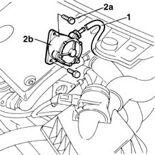

3330D30 vacuum pump - r+r
- Path
- Procedures > 33 BRAKING SYSTEM > 3330 HYDRAULIC BRAKING SYSTEM > 3330D brake vacuum system > 3330D30 vacuum pump - r+r
- Kind
- repair procedure (removal / refitting; the operation number is the code)
- Applies to
- engines: 1.9 JTD 8V; all production periods
- Interactive page
- https://sloeber94.github.io/elrnDB-fMltpl/en/#/2891635
Applies to: engines: 1.9 JTD 8V; all production periods
 Removing
Removing
 Refitting
Refitting1. Disconnect the vacuum pipe from the vacuum unit.
2. Undo the fixing bolts (2a) and remove the vacuum unit (2b) complete with O-ring.
Recover the vacuum unit gasket from the housing with the camshaft cap.

Applies to: engines: 1.9 JTD 8V; all production periods
Refitting
RemovingReplace the gasket and the O-ring before refitting.
Fit the vacuum unit.
Tighten the fixing bolts to torque.
 | Fastening | Component | Ø | Value (daNm) |
|---|---|---|---|---|
- | Bolt | FLYWHEEL SIDE COVER | M8 | 2.1 - 2.6 |
Connect the vacuum intake pipe to the vacuum unit.